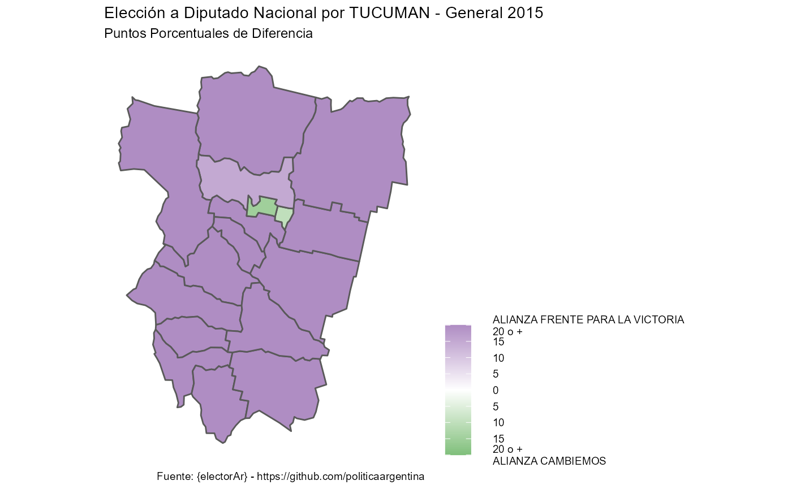
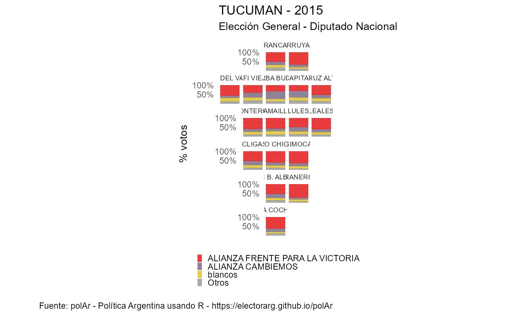

library(polArverse)
#> -- Attaching packages ------------------------------------- polArverse0.0.1.2 --
#> v geoAr 0.0.1.4.2 v discursAr 0.0.1.0
#> v legislAr 0.0.1.0 v polArViz 0.0.1.0
#> v opinAr 0.0.1.1 v censAr 0.0.0.9
#> v electorAr 0.0.1.0
#> -- CENSOS ARGENTINA ------------------------------------------------------------
#>
#> La documentacion del paquete {censo2017} sobre el que está basado {censAr} y ejemplos de uso se encuentran en https://pacha.dev/censo2017/.
#> Visita https://buymeacoffee.com/pacha si deseas donar para contribuir al desarrollo de software como este.
#> Esta libreria necesita XX GB libres para la crear la base de datos localmente. Una vez creada la base, esta ocupa YYY GB en disco.
#> electorAr brinda herramientas que facilitan el acceso y el trabajo con datos electorales de Argentina desde R. Prácticamente todos los datos tienen como fuente el Atlas Electoral de Andy Tow. Los mismos pueden ser (a) desagregados a nivl de mesas (con datos desde 2003 a 2019) para cargos nacionales (presidente, diputades y senadores); o (b) agregados (para cargos ejectuvios, nacionales y provinciales entre 1946 y 2019).
library(electorAr)
# Elecciones disponibles según dos fuente de datos
# 'results' para datos agregados y 'data' para escrutinios provisorios
show_available_elections(source = "results")
#> # A tibble: 705 x 5
#> district category round year NOMBRE
#> <chr> <chr> <chr> <chr> <chr>
#> 1 arg presi balota 2015 ARGENTINA
#> 2 arg presi gral 1946 ARGENTINA
#> 3 arg presi gral 1951 ARGENTINA
#> 4 arg presi gral 1958 ARGENTINA
#> 5 arg presi gral 1963 ARGENTINA
#> 6 arg presi gral 1983 ARGENTINA
#> 7 arg presi gral 1989 ARGENTINA
#> 8 arg presi gral 1995 ARGENTINA
#> 9 arg presi gral 1999 ARGENTINA
#> 10 arg presi gral 2003 ARGENTINA
#> # ... with 695 more rowsHabiendo elegido los datos agregados, podemos, por ejemplo, con la ayuda de dplyr filtrar las elecciones disponibles con resultados para Goberndaro de la Provincia de Tucumán.
# Filtro eleciones de interés
(gobernadores_tucuman <- show_available_elections(source = "results") %>%
dplyr::filter(NOMBRE == "TUCUMAN",
category == "gober"))
#> # A tibble: 10 x 5
#> district category round year NOMBRE
#> <chr> <chr> <chr> <chr> <chr>
#> 1 tucuman gober gral 1983 TUCUMAN
#> 2 tucuman gober gral 1987 TUCUMAN
#> 3 tucuman gober gral 1991 TUCUMAN
#> 4 tucuman gober gral 1995 TUCUMAN
#> 5 tucuman gober gral 1999 TUCUMAN
#> 6 tucuman gober gral 2003 TUCUMAN
#> 7 tucuman gober gral 2007 TUCUMAN
#> 8 tucuman gober gral 2011 TUCUMAN
#> 9 tucuman gober gral 2015 TUCUMAN
#> 10 tucuman gober gral 2019 TUCUMANLa función show_available_elections() (con el parámetro
source = "results") nos devuelve el listado de dichas
elecciones con 4 variables relevantes (district,
category, round, year) que son
los parámetros necesarios a ser completados para descargar los datos de
una elección determinada.
Una alternativa posible es descargar una elección en particular con
get_election_results():
electorAr::get_election_results(district = "tucuman",
category = "gober",
round = "gral",
year = 1999)
#> # A tibble: 9 x 8
#> category round year codprov name_prov listas votos electores
#> <chr> <chr> <dbl> <chr> <chr> <chr> <dbl> <dbl>
#> 1 gober gral 1999 23 TUCUMAN Frente Fundacional De~ 224900 826570
#> 2 gober gral 1999 23 TUCUMAN Fuerza Republicana 220695 826570
#> 3 gober gral 1999 23 TUCUMAN Alianza Para El Traba~ 138398 826570
#> 4 gober gral 1999 23 TUCUMAN Pueblo Unido 31221 826570
#> 5 gober gral 1999 23 TUCUMAN Humanista 1040 826570
#> 6 gober gral 1999 23 TUCUMAN Frente Unidad Trabaja~ 766 826570
#> 7 gober gral 1999 23 TUCUMAN Accion Provinciana 31 826570
#> 8 gober gral 1999 23 TUCUMAN Votos En Blanco 10051 826570
#> 9 gober gral 1999 23 TUCUMAN Votos Nulos 8064 826570Pero también podemos descargarnos todas las elecciones juntas, del siguiente modo:
# Descargo multiples elecciones seleccionadas
(elecciones <- get_multiple_elections(gobernadores_tucuman,
source = 'results'))
#> # A tibble: 10 x 2
#> # Groups: id [10]
#> id election
#> <glue> <list>
#> 1 tucuman_gober_gral_1983 <spec_tbl_df [19 x 9]>
#> 2 tucuman_gober_gral_1987 <spec_tbl_df [16 x 9]>
#> 3 tucuman_gober_gral_1991 <spec_tbl_df [12 x 8]>
#> 4 tucuman_gober_gral_1995 <spec_tbl_df [11 x 8]>
#> 5 tucuman_gober_gral_1999 <spec_tbl_df [9 x 8]>
#> 6 tucuman_gober_gral_2003 <spec_tbl_df [10 x 8]>
#> 7 tucuman_gober_gral_2007 <spec_tbl_df [15 x 8]>
#> 8 tucuman_gober_gral_2011 <spec_tbl_df [17 x 8]>
#> 9 tucuman_gober_gral_2015 <spec_tbl_df [9 x 8]>
#> 10 tucuman_gober_gral_2019 <spec_tbl_df [11 x 8]>get_multiple_elections() tiene como paráemtro
obligatorio source donde debe definirse cual de las dos
fuentes de datos se está llamando. Además tiene como posibilidad
devolver un tibble único (simplificando la estructura de
lista de la variable election) con la opción
unnest = TRUE.
(elecciones_simplificadas <- get_multiple_elections(gobernadores_tucuman,
source = 'results',
unnest = TRUE))
#> # A tibble: 129 x 10
#> id category round year codprov name_prov listas votos electores cargos
#> <glue> <chr> <chr> <int> <chr> <chr> <chr> <dbl> <dbl> <dbl>
#> 1 tucuma~ gober gral 1983 23 TUCUMAN Justi~ 253485 612446 34
#> 2 tucuma~ gober gral 1983 23 TUCUMAN Union~ 181576 612446 24
#> 3 tucuma~ gober gral 1983 23 TUCUMAN Alian~ 29103 612446 2
#> 4 tucuma~ gober gral 1983 23 TUCUMAN Movim~ 4309 612446 0
#> 5 tucuma~ gober gral 1983 23 TUCUMAN Comun~ 3592 612446 0
#> 6 tucuma~ gober gral 1983 23 TUCUMAN De Ce~ 3016 612446 0
#> 7 tucuma~ gober gral 1983 23 TUCUMAN Union~ 1875 612446 0
#> 8 tucuma~ gober gral 1983 23 TUCUMAN Feder~ 1711 612446 0
#> 9 tucuma~ gober gral 1983 23 TUCUMAN Socia~ 1674 612446 0
#> 10 tucuma~ gober gral 1983 23 TUCUMAN Intra~ 1504 612446 0
#> # ... with 119 more rows{elecotrAr} provee además una familia de funciones
compute_ que calcular una serie de indicadores básicos del
análisis electoral. Veamos algunos ejemplos para la elección de
1995:
# Seleciono la elección a Gobernador de TUCUMAN en 1999
(eleccion99 <- elecciones$election[[5]])
#> # A tibble: 9 x 8
#> category round year codprov name_prov listas votos electores
#> <chr> <chr> <int> <chr> <chr> <chr> <dbl> <dbl>
#> 1 gober gral 1999 23 TUCUMAN Frente Fundacional De~ 224900 826570
#> 2 gober gral 1999 23 TUCUMAN Fuerza Republicana 220695 826570
#> 3 gober gral 1999 23 TUCUMAN Alianza Para El Traba~ 138398 826570
#> 4 gober gral 1999 23 TUCUMAN Pueblo Unido 31221 826570
#> 5 gober gral 1999 23 TUCUMAN Humanista 1040 826570
#> 6 gober gral 1999 23 TUCUMAN Frente Unidad Trabaja~ 766 826570
#> 7 gober gral 1999 23 TUCUMAN Accion Provinciana 31 826570
#> 8 gober gral 1999 23 TUCUMAN Votos En Blanco 10051 826570
#> 9 gober gral 1999 23 TUCUMAN Votos Nulos 8064 826570compute_nep()
# Número Efectivo de Partidos (NEP)
compute_nep(eleccion99)
#> # A tibble: 2 x 6
#> value index year category round codprov
#> <dbl> <chr> <int> <chr> <chr> <chr>
#> 1 3.24 Golosov 1999 gober gral 23
#> 2 3.37 Laakso-Taagepera 1999 gober gral 23compute_concentration()
# Concentración
compute_concentration(eleccion99)
#> # A tibble: 1 x 5
#> codprov concentration year category round
#> <chr> <dbl> <int> <chr> <chr>
#> 1 23 0.7 1999 gober gralcompute_competitiveness()
# Competitividad
compute_competitiveness(eleccion99)
#> # A tibble: 1 x 5
#> codprov competitividad year category round
#> <chr> <dbl> <int> <chr> <chr>
#> 1 23 0.993 1999 gober gralCon la ayuda de polArViz podemos acceder rápidamente a una serie de visualizaciones de los datos electorales.
Ppor el momento solo disponible para los descargados desde
source = "data". Descarguemos entonces nuevos datos:
datos <- get_election_data(district = "tucuman",
category = "dip",
round = "gral",
year = 2015){gt}
polArViz::tabulate_results(datos)| TUCUMAN - 2015 | |
|---|---|
| Elección General - Diputado Nacional | |
| Lista | Votos |
| 0131-ALIANZA FRENTE PARA LA VICTORIA | 43.5% |
| 0135-ALIANZA CAMBIEMOS | 28.4% |
| blancos | 14.7% |
| 0177-PARTIDO MOVIMIENTO DE PARTICIPACION CIUDADANA | 10.0% |
| 0137-ALIANZA FRENTE DE IZQUIERDA Y DE LOS TRABAJADORES | 2.7% |
| nulos | 0.6% |
| Fuente: polArverse - https://politicaargentina.github.io/electorAr | |
{ggplot2} + {sf}
Para poder mapear la elección, los datos deberían descargarse a nivel
departamento con el parámetro level.
datos_depto <- get_election_data(district = "tucuman",
category = "dip",
round = "gral",
year = 2015,
level = "departamento")
polArViz::map_results(datos_depto)
Este nivel de agregación nos permite también utilizar la función
plot_results(). La misma, al detectar que se trata de datos
al nivel de departamentos hará uso de grillas predefinidas
por el paquete geoAr para ser usadas por
geofacet y su función de facetado
facet_grid().
polArViz::plot_results(datos_depto)